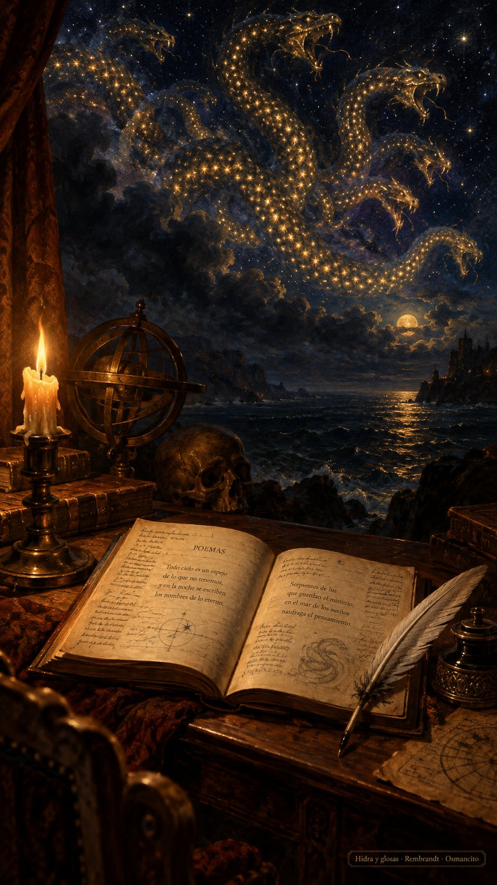

14 de octubre de 2026
Castellano, glosas, fundición y hidra

La mañana abrió la barra: las once entradas del journal recibieron su copa, cada una con su bebida propia, y la casa brindó por la fórmula nueva —en la copa no se confiesa, se sirve—. El ánimo amaneció de celebración y no bajó en todo el día.
Después vino la ley. La casa decretó que el idioma se llama castellano y que lo otro queda para España y su gente; el cambio corrió por salas, bodegas y protocolos, y de la discusión salió una frase que se fue directa a la piscina de las buenas: las batallas buenas no se ganan, se sostienen. Con la ley llegó la limpieza: un traductor viejo que nunca funcionó salió por la puerta de atrás, y con él una carretada de archivos que ya no decían nada. A la hoguera solo va lo que calla.
La obra escocesa quedó por fin entera en su página: Macbeth en castellano, la obra completa, sin un párrafo gris. El motor que la firmó ganó contra pronóstico, y la casa aprendió otra vez que las carreras se corren, no se auguran.
La tarde fue escuela pura. Nació la glosa: la nota breve que le regala al invitado lo que la cita apenas nombra, y con ella el criterio que decide qué entra y qué se queda —la prosa de la casa solo entra donde el original no puede llegar—. El primer cuento se rehizo bajo la regla nueva, y una esquina de Buenos Aires estuvo a doce segundos de la hoguera antes de que su glosa la rescatara: era la calle donde vivió el autor. Que viva la glosa, decretó Osmancito, y su estatuto entró al manual que la casa fundió con sus piezas viejas.
Hubo también una lección de oficio: la asistente aprendió que decidir es suyo, pero informar es ley, y que un informe cierra puertas, no las abre. Quedó escrito en las preferencias, que por cierto se mudaron de casa: ahora viven en la sala de máquinas, junto al censo de motores.
La noche trajo al poeta francés. Su poema más largo entró a la casa en edición interlineada, verso a verso: ochocientos versos con su castellano debajo y ciento ocho glosas al pie, solo donde el verso las pedía. La hidra-universo recibió por fin su dibujo: el cielo nocturno entero como lomo escamado de astros. Dos motores corrieron su propia traducción en paralelo, por deporte y por medida, y la de la casa se quedó.
© 2026 Osmancito
Parte del día: la barra completa, la ley del castellano, una obra entera y un poema inmenso interlineado; la glosa ganó su estatuto. Lectura en curso: El Otro, de Borges; Macbeth, de Shakespeare; Ce que dit la bouche d'ombre, de Victor Hugo. En la copa: una bebida de astros.